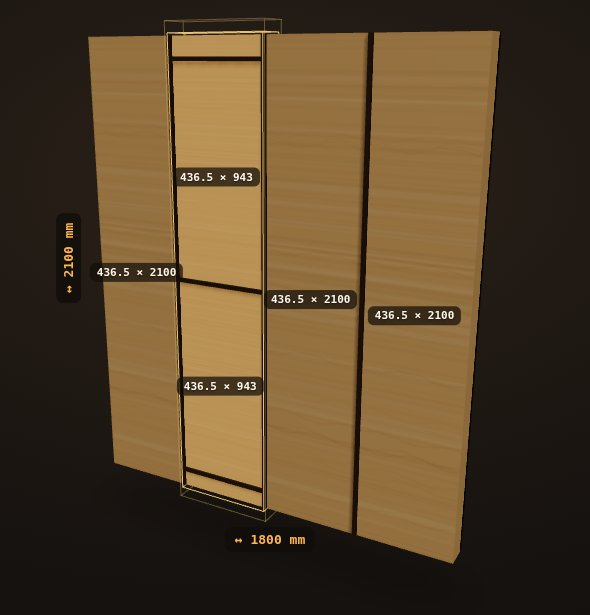

▶ Playable Demo
▶ Playable Demo
Open to new opportunities · Tangier, Morocco
Hussein Bouik
Software Engineer · .NET, Azure & Interactive 3D
I build reliable, scalable web applications and enterprise solutions with .NET and Azure, and create interactive 3D product configurators with real-time rendering and custom engines.
Languages Arabic (native) · English & French (full professional) · German B1 · Spanish (learning) 1-month notice · Open to relocation

3+ yearsProfessional experience
Enterprise .NETMicroservices & Azure
3D & Product ConfiguratorsOwn linear-division engine
1st placeSoliHackathon ’24
Tech Stack
 .NET
.NET Azure
Azure React
React TypeScript
TypeScript- SQL
 Redis
Redis Docker
Docker
Featured Projects
A selection of real projects that show my work, problem-solving and impact.
▶ Playable Demo
UVP
Enterprise .NET microservices on Azure
Global-scale platform · United Nations Volunteers programme
▸ Case Study — Employer Work
 ◎ Founder Project
◎ Founder Project
NTT DATA
Work at NTT DATA
Building the UN Volunteers Platform (UVP)
I contribute to the development and improvement of the UVP (DoA & BackOffice), working across backend, frontend, and SQL, with Azure, Hangfire, Redis and AppInsights.
Read detailed case studySelected impact
- Cut the recruiter export from 2+ hours (~400 records) to under 30 minutes.
- Added “Resend” history with flattening, filters, sorting and pagination.
- Fixed key defects (funding type filter, progress tracker, B2C labels).
- Improved stability (telemetry crash, session handling) and permissions.
Skills & Tools
Technologies I use to build, deploy and scale reliable products.
Backend & Architecture
.NET · C# · CQRS · Microservices
API Design · Clean Code
Frontend & 3D
React · TypeScript · R3F
3D Configurators · UI/UX
Cloud & DevOps
Azure · CI/CD · Docker · Redis
Hangfire · AppInsights
Tools & Practices
Git · SQL · Testing · Code Quality
Agile · Problem Solving
Experience
My professional journey so far.
-
2022
Solicode
Foundations · PHP
-
2024
WINS
Full-stack .NET
-
2025
Tecnibo
3D Configurators
-
Now
NTT DATA
UN Volunteers Platform
Key Achievements
Performance
< 30 min export (from 2h+)
Mentoring
Supported new joiners
Reliability
Fixed critical production issues
Recognition
1st place — SoliHackathon ’24
More Projects
Everything else I’ve built and learned from, in one list.
-
Live demo ↗Code ↗
Article Models
Parametric door & panel configurator — 13 model families generated procedurally, with CSG-cut handle openings.
-
Live demo ↗Code ↗
Article Designer
Full-stack 3D article configurator with zones, divisions and articles — co-built with Mohamed Alfakir.
-
Hackathon winner
QATRA
Water-saving app for households — 1st place at SoliHackathon 2024, with Team Coding Commanders.
-
Visit site ↗
NotfallCode
Emergency-information QR platform — live in production.
-
Code ↗
Spring / React CRUD
Full-stack CRUD application — Spring Boot back end, React front end.
-
Code ↗
3D Office Table
Early 3D prototype of a configurable office table — where the configurator work began.
-
Code ↗
linear-zone-divider
The standalone TypeScript engine behind Zoning Studio, with its own test suite.
About
I’m a software engineer based in Tangier with 3+ years of experience across enterprise platforms and 3D product configurators. At NTT DATA I build .NET microservices and React front ends for the UN Volunteers Platform; before that, I built advanced Three.js configurators for made-to-measure wood products at Tecnibo and full-stack .NET software at WINS. In parallel I’m founding Ouiboo, a travel marketplace for Morocco, and I integrate AI services into products where they genuinely help. My focus: clean architecture, measurable impact, and interfaces people enjoy using.
Let’s build something impactful together.
Open to opportunities in .NET, cloud, and product engineering.